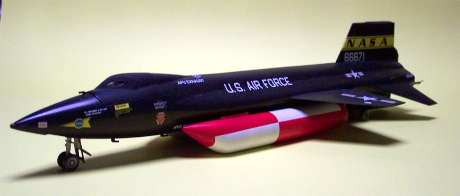
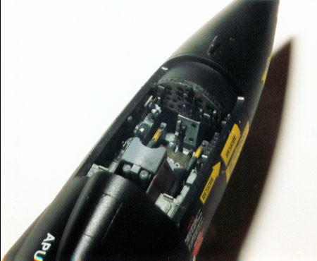
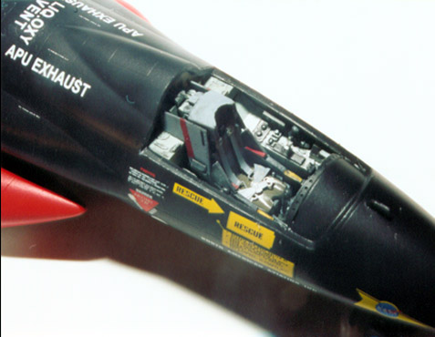
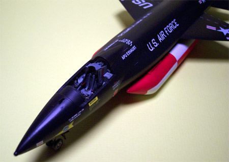
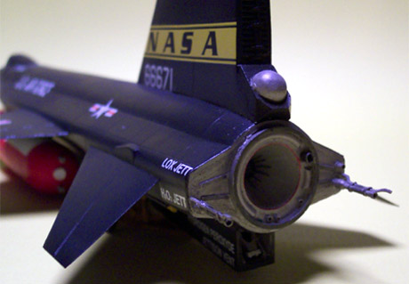
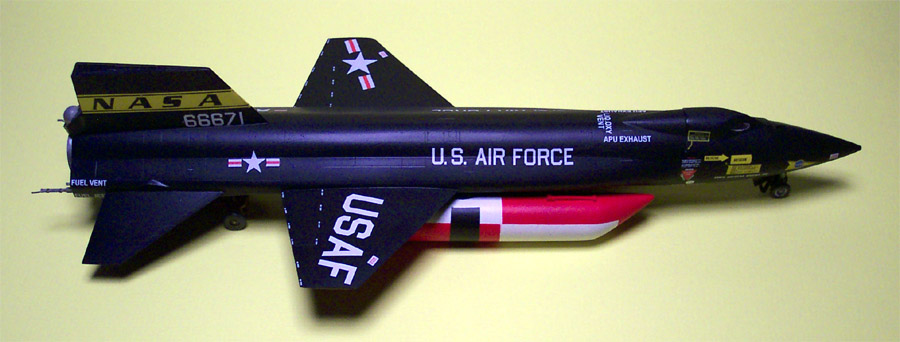
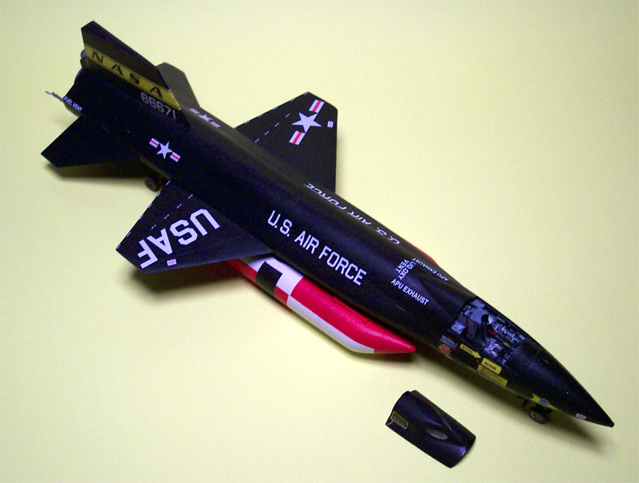

Special Hobby 1/48 Scale X-15 A-2
Multimedia Kit
Images, text and model copyright � 2003 by Matt Swan
����� I built this kit in April of 2002. The X-15 has always been a fascinating aircraft for me, the adventure and danger associated with exploring the unknown, pushing the boundaries of flight and space travel. I had built a 1/72 scale model of this craft way back when but when Special Hobby announced the release of this kit I was right there at the head of the line to get one.
 
����� The kit is pretty nice, in my opinion, and includes the main body halves as large injection molded pieces that are top half and bottom half which makes cleaning up the seam a piece of cake. Also included is a nice selection of resin detail parts like the engine, cockpit and various detail parts. The decals are nicely done and very thin and include a set of corrected decals for color and lettering. Apparently they screwed up the first run but were smart enough to catch and fix the problem before it hit the shelves. The painting instructions for the ejection seat are incorrect and you should look up related pictures at Dryden Flight Research Museum. The seat belts are the only thing that I added to the kit. They are old WW2 German belts that very closely resemble the actual belts used on this style of ejection seat. Think about it for a minute, an ejection seat at Mach 3 or higher? At anything over Mach 1 I don't think your chances are very good, I think I would take my chances with the aircraft which is probably why so many test pilots bought the farm with the craft.
 
����� Like most limited run kits there are no locator pins anywhere on the kit and the sprue gates are fairly heavy on the plastic parts. My kit is painted almost entirely with Testors and Model Master enamels. The decals were applied overtop a coating of Future floor sealant with a combination of Micro-Set and Micro-Sol and the entire model was finished off with some Testors Dull Coat.


����� It was a fun kit and didn�t really take that long to build. I think I had only about ten or twelve hours of build time involved in it. I think that the toughest thing about this kit was the masking and painting of those external fuel tanks. Overall the parts fit together well and as I recall there was very little trim work needed. The ventral fin had to be cut down for the gear down version with a fair amount of putty involved there and the interior parts of that fin were pretty fiddly getting them together. The trolly that the aft end sits on is a very delicate structure and needs to be handled with care. Now days there are several accessory kits available for this model that show up from time to time on E-Bay allowing you to build other versions of the craft.